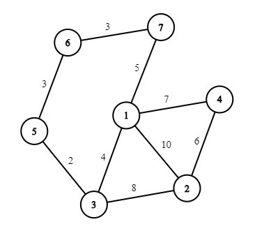

CF1343E Weights Distributing[ 贪心 最短路 ]
You are given an undirected unweighted graph consisting of n vertices and m edges (which represents the map of Bertown) and the array of prices p of length m. It is guaranteed that there is a path between each pair of vertices (districts).
Mike has planned a trip from the vertex (district) a to the vertex (district) b and then from the vertex (district)b to the vertex (district) c. He can visit the same district twice or more. But there is one issue: authorities of the city want to set a price for using the road so if someone goes along the road then he should pay the price corresponding to this road (he pays each time he goes along the road). The list of prices that will be used pp is ready and they just want to distribute it between all roads in the town in such a way that each price from the array corresponds to exactly one road.
You are a good friend of Mike (and suddenly a mayor of Bertown) and want to help him to make his trip as cheap as possible. So, your task is to distribute prices between roads in such a way that if Mike chooses the optimal path then the price of the trip is the minimum possible. Note that you cannot rearrange prices after the start of the trip.
Example
input
1 | 2 |
output
1 | 7 |
Note
One of the possible solution to the first test case of the example:
You have to answer t independent test cases.

$a\rightarrow b \rightarrow c$ 可以观察出：
1、$a\rightarrow b \rightarrow c$ 在一条路径上
2、$a \rightarrow x , x \rightarrow b, b \rightarrow x, x\rightarrow c$ 四段
枚举 x ，$ans = \sum sum[db[x]] + sum[da[x]+db[x]+dc[x]]$
1 | const int MAX=200000+10; |